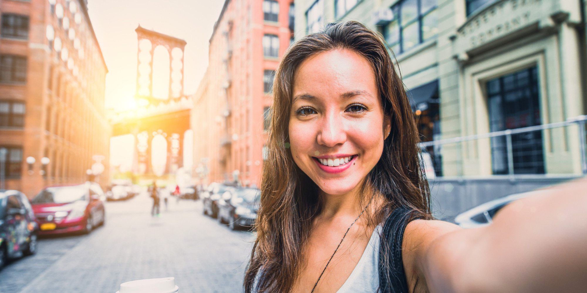
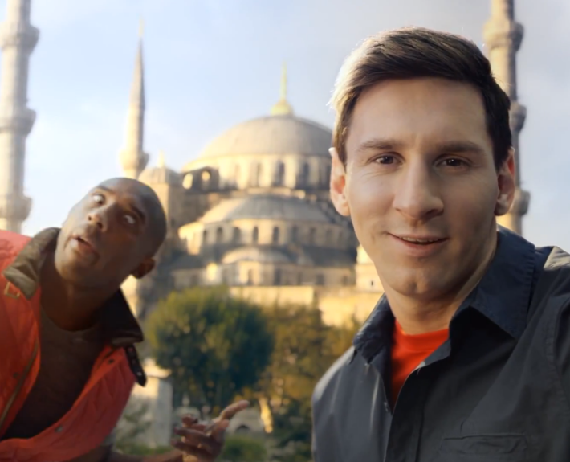
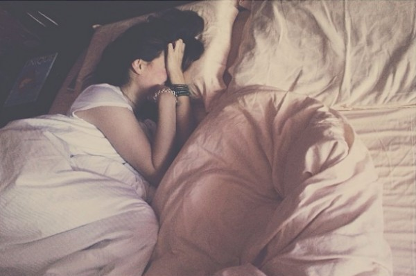

Що таке селфі

Останнім часом у фотографії з'явився новий жанр - селфі. І цей жанр відразу завоював велику кількість шанувальників, особливо молодих людей. Але, давайте розберемося, що ж таке це "селфі". Відразу можна сказати - автопортрет, але з деякими нюансами. У класичному автопортреті не завжди можна зрозуміти сам автор знімав фото чи йому хтось допоміг. Селфі ж являє собою очевидний автопортрет, на якому чітко видно, що автор знімав сам себе.
Загальну кількість фотографій, не залежно від жанру, можна розділити на хороші і погані. Складові цих понять різні, але є й такі, які однакові для всіх жанрів. Давайте розглянемо в обов'язковому порядку, на що необхідно звертати свою увагу, щоб отримати хороші знімки, які будуть відрізнятися від великої кількості само портретів, тобто селфі, в кращу сторону.
Завжди слід пам'ятати про те, що хороше освітлення є невід'ємним елементом будь-якої фотографії, і селфі не є винятком з цього правила.
І перш, ніж натиснути кнопку спуску фотокамери, виберіть місце, де достатньо освітлення. У першу чергу, слід звернути свою увагу на те, щоб сонце або інше джерело світла знаходилось перед вами і трохи вище рівня очей, а не світило з-за спини прямо в фотокамеру.
Якщо зйомка ведеться в приміщенні, то слід використовувати тонку завісу, яка буде прикривати вікно, з якого будуть йти прямі сонячні промені. Або прикривайте джерело світла тонкою тканиною, яка розсіє світло, і дасть можливість отримати м'яке освітлення, що, безсумнівно, відіб'ється найкращим чином на якості вашого знімку. Добре відомо, що природне світло найкраще передає гамму кольорів, на відміну від штучного, але при селфі не дуже важлива точність передачі кольору, так як в деяких випадках спотворення колірної гами може послужити свого роду художньої «фішкою» фотознімку. Для створення кращих умов зйомки, виробники студійного обладнання створили спеціальну ручку для селфі, на яку можна прикріпити фотокамеру, що значно підвищуватиме зручність для зйомки автопортрета.
Де робити селфі.
Наступна обставина, на яку слід звернути увагу це місце, де ви збираєтеся зробити знімок. Часом зустрічаються такі місця, де ваше селфі буде недоречним. Це може бути весілля, якийсь урочистий захід, і нарешті - траурна церемонія.
Кожного разу, коли ви збираєтеся зробити селфі, задайтеся простим питанням - «Відбувається зараз і тут щось більш важливе, ніж я?» Якщо ваша відповідь буде «так», то зйомку селфі слід перенести на інший час.
До числа найпоширеніших помилок при зйомці селфі є те, що в більшості випадків фотографи практично не звертають свою увагу на фон знімка. Адже в портретній фотографії фон в більшості випадків є досить значущою частиною фотознімку. Якраз від фону залежить загальне враження від вашого знімка. Але якщо ваш знімок буде зроблений, наприклад, у ванній кімнаті на тлі рушників або білизни, то навряд чи такий знімок буде цікавий комусь, хіба що невеликому колу ваших друзів, які, як і ви захоплюються селфі.
 Останнім часом у фотографії з'явився новий жанр - селфі. І цей жанр відразу завоював велику кількість шанувальників, особливо молодих людей. Але, давайте розберемося, що ж таке це "селфі". Відразу можна сказати - автопортрет, але з деякими нюансами. У класичному автопортреті не завжди можна зрозуміти сам автор знімав фото чи йому хтось допоміг. Селфі ж являє собою очевидний автопортрет, на якому чітко видно, що автор знімав сам себе.
Задумайтесь над тим фактом, що навколишня природа завжди була прекрасним фоном. Навесні і влітку ви можете робити знімки тлі красивих кущів з квітами або на тлі блакитного неба з хмарами. Восени вам допоможуть строкаті і яскраві килими з опалого листя, а взимку ваш знімок може прикрасити брила льоду або гора снігу.
Якщо ви дотримуєтеся думки, що природа не зовсім підходить вам в якості обстановки для створення селфі, то можете залишатися в приміщенні, але при цьому слід добре вивчити навколишнє оточення. Перш, ніж зняти свій автопортрет, слід прибрати всі речі, які лежать в самих невідповідних місцях, і, як правило, будуть притягувати увагу на знімку. На своєму знімку ви можете відобразити, чим ви займаєтеся, і що вам подобається або чим ви займаєтеся в даний момент часу. Задній план ви можете організувати самостійно - для цього складіть стопкою журнали і книги на тлі книжкової шафи, якщо ви дотримуєтеся думки, що ви є завзятим книгоманом, і хочете про це всім розповісти. Завжди пам'ятайте, що задній план повинен стати вашим співавтором, тоді й сам знімок буде виглядати набагато цікавіше.
 Обов'язково стежте за тим, щоб на задньому плані не з'явилася якась особистість, і своєю присутністю вона зможе зіпсувати ваш знімок. Це можуть бути ваші молодші брати і сестри, які захочуть раптово поставити вам «ріжки» або несподівано вистрибнуть зі свого укриття з криками, які зможуть вас налякати. Завжди слід пам'ятати про те, що вони є.
Дуже часто автопортрети роблять для того, щоб показати свою якусь обновку або стрижку. Незважаючи на хвилювання від придбаної обновки необхідно переконатися в тому, що кадрування вибрано правильно і акцент кадру знаходиться саме в тій частині кадру, яку вам би хотілося продемонструвати, перш за все.
 Дуже часто можна зустріти селфі молодих дівчат, які хочуть продемонструвати свою чарівну красу і роблять селфі, прямо так би мовити, з ліжка, безпосередньо після сну і т.п. Але навіть якщо вам здасться, що ви дійсно чарівні і схожі на ангела, то повірте, такі знімки можна демонструвати тільки своїй мамі. Вона зможе оцінити ваше бажання і буде рада, що ви показали їй таку чудову фотографію. Інші ж глядачі будуть тільки скромно посміхатися.
При створенні особистих знімків не слід забувати все-таки про сильні сторони своєї зовнішності. Якщо природа наділила вас прекрасним волоссям, то намагайтеся зробити так, щоб на них обов'язково звернули увагу, навіть якщо ви знімаєтеся на тлі якогось величної історичної споруди. Також вам може здатися, що посміхатися самому собі в фотокамеру або камеру мобільного телефону, є заняттям досить дурним, та й вигляд у вас не найкращий. Необхідно відкинути всі свої сумніви - посміхайтеся, посміхайтеся і ще раз посміхайтеся. Завжди пам'ятайте, що селфі саме по собі заняття досить безглузде, тому завжди посміхайтеся такому факту.
Ми знаємо, що усмішки бувають різні - починаючи від лукавої посмішки із закритим ротом, до широко відкритого рота і гучного реготу. Тим не менше посмішка є одним з найпопулярніших виразів обличчя, які ви можете завжди використовувати при фотозйомці в будь-якій ситуації.
Крім того, слід уникати типових помилок. Такі помилки включають в себе смішні пози, які багато хто вважає спокусливими і крутими. Наприклад, коли людина робить вигляд, що спить або його застали зненацька у якійсь ситуації. У селфі такі позиції вважаються моветоном. Для селфі в повний зріст діють загальні правила портретної зйомки. Одне з таких правил - необхідно розташуватися впівоберта до фотокамери, це дає можливість значно витягнути лінію зросту, і ви будете виглядати більш струнко. При зйомках ніг, намагайтеся захопити ракурс від колін, що дасть можливість прибрати зайву монолітність і тяжкість верхньої частини тулуба.
 І на завершення хочеться відзначити для багатьох любителів селфі, що буде абсолютно непогано, коли ви будете ділитися зі своїми друзями власними кадрами. Але якщо у вашому багажі більше, ніж 1 селфі на 8-10 знімків, то слід подумати над тим, що може варто урізноманітнити свої фотографічні пошуки і спробуйте познімати щось інше на свою фотокамеру.
І на завершення хочеться відзначити для багатьох любителів селфі, що буде абсолютно непогано, коли ви будете ділитися зі своїми друзями власними кадрами. Але якщо у вашому багажі більше, ніж 1 селфі на 8-10 знімків, то слід подумати над тим, що може варто урізноманітнити свої фотографічні пошуки і спробуйте познімати щось інше на свою фотокамеру.